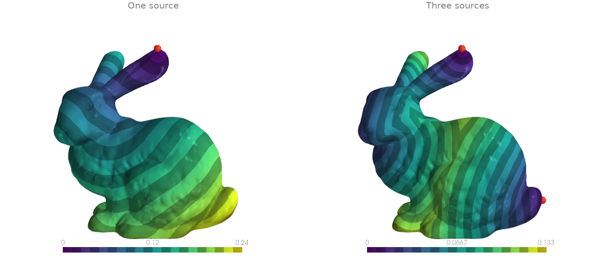
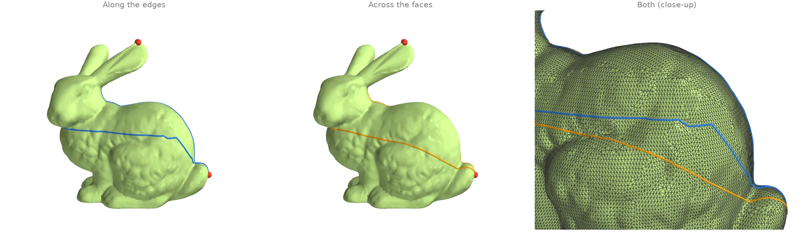
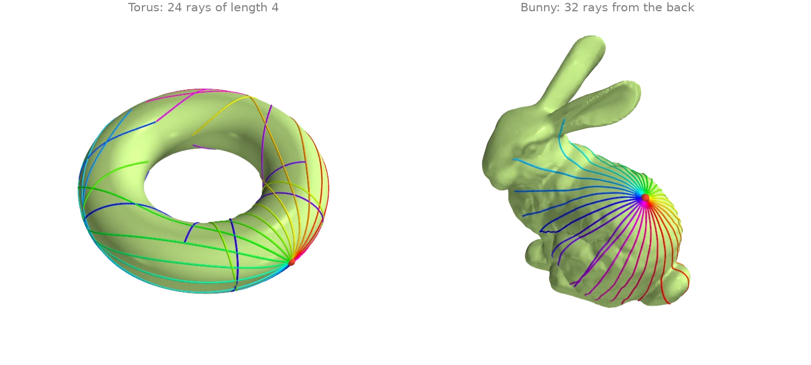
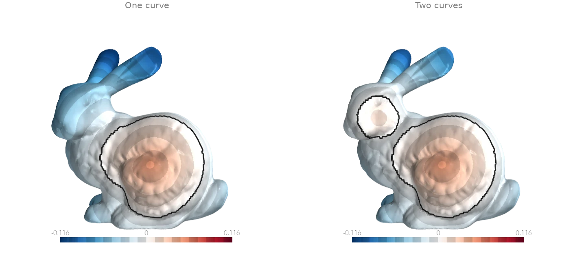
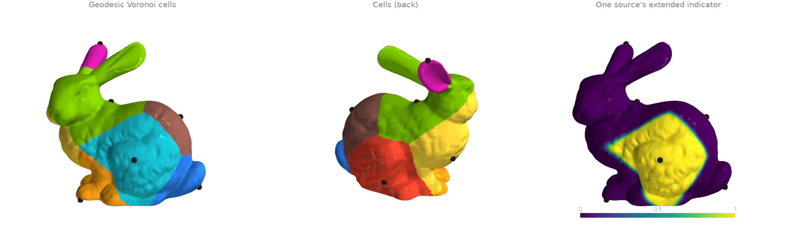
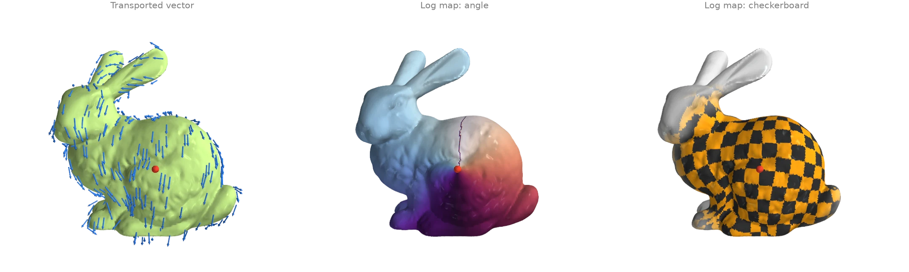
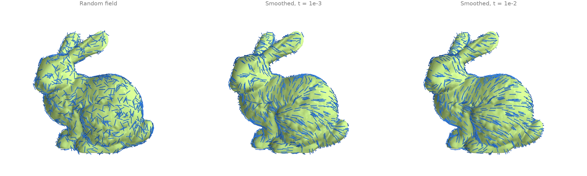
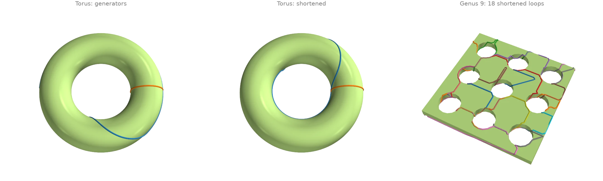

Geodesics and tangent fields
Heat-method distances, geodesic paths and tracing, vector transport and the log map.
Geodesic distance with the heat method
heat_geodesic approximates the distance along the surface to
the nearest source vertex. It diffuses heat from the sources for a short time, normalizes the
gradient of the result into a unit field, and integrates that field back into a distance.
Given a Trimesh, the two sparse operators this needs are built once
and kept on the mesh -- with their factorizations, built on the second call -- so the second
set of sources here reuses them.
import warp as wp
import ordito as od
from examples import data
mesh = od.Trimesh(*data.load("bunny", device))
ear = wp.array([22820], dtype=wp.int32, device=device)
landmarks = wp.array([22820, 11842, 12217], dtype=wp.int32, device=device) # ear, nose, tail
from_ear = od.heat.heat_geodesic(mesh, ear)
from_landmarks = od.heat.heat_geodesic(mesh, landmarks) # the mesh's operators, factored
print(f"farthest point from the ear: {from_ear.numpy().max():.4f}")
farthest point from the ear: 0.2396

Modelled on: libigl 716 · potpourri3d · PyMeshLab
Shortest paths: along the edges and across the faces
Two answers to "how do I get from the ear to the tail". The edge graph's shortest path comes
from shortest_path_envelope (Dijkstra's distances,
computed by parallel relaxation over the edges_to_csr
adjacency) followed by a short backtrack; it zigzags because it may only follow edges.
geodesic_path instead descends one heat-method
distance field from every target, so its paths cut straight across faces and are shorter.
import numpy as np
import warp as wp
import ordito as od
from examples import data
vertices, faces = data.load("bunny", device)
tail, targets = 12217, [22820, 11842] # from the ear tip and the chin to the tail
# Across the faces: descend the heat distance to the tail from every target.
source = wp.array([tail], dtype=wp.int32, device=device)
points, offsets = od.geodesic_walk.geodesic_path(
vertices, faces, source, wp.array(targets, dtype=wp.int32, device=device)
)
geodesics = od.array.split(points, offsets)
# Along the edges: Dijkstra distances to the tail, then step to the closest neighbour.
n = vertices.shape[0]
edges = od.edges.edges_unique(faces, n_vertices=n, validate=False)[0]
graph = od.graph.edges_to_csr(n, edges, od.edges.edges_unique_length(vertices, faces, edges))
seed = np.full(n, 1e6, dtype=np.float32)
seed[tail] = 0.0
dist = od.graph.shortest_path_envelope(graph, wp.array(seed, device=device)).numpy()
rows, cols, weights = graph.offsets.numpy(), graph.columns.numpy(), graph.values.numpy()
edge_paths = []
for v in targets:
path = [v]
while v != tail:
ring = slice(rows[v], rows[v + 1])
v = cols[ring][np.argmin(dist[cols[ring]] + weights[ring])]
path.append(v)
edge_paths.append(np.array(path))
for name, geodesic, path in zip(["ear", "chin"], geodesics, edge_paths, strict=True):
along_edges = np.linalg.norm(np.diff(vertices.numpy()[path], axis=0), axis=1).sum()
print(
f"{name} -> tail: {along_edges:.4f} along edges, "
f"{od.polyline.polyline_length(geodesic):.4f} across faces"
)
ear -> tail: 0.2362 along edges, 0.2251 across faces
chin -> tail: 0.2137 along edges, 0.2018 across faces

Modelled on: potpourri3d: geodesic paths · libigl 206 · PyVista: geodesic · trimesh: shortest path
Tracing straightest geodesics (the exponential map)
trace_from_vertex walks a batch of rays across the
surface, each starting at a vertex in a tangent direction and going straight ahead through
every face it enters, for an arc length equal to the direction's length. A fan of equal-length
rays in every direction is the image of a disk under the exponential map: on the torus the
rays along the outer equator stay together while those climbing over the tube spread and wind
around it. The tangent directions are built in each vertex's frame from
vertex_tangent_frames.
import numpy as np
import warp as wp
import ordito as od
from examples import data
def fan(name: str, start: int, length: float, n_rays: int = 32):
vertices, faces = data.load(name, device)
basis_x, basis_y, _ = od.tangent_space.vertex_tangent_frames(vertices, faces)
angle = (np.arange(n_rays)[:, None] + 0.5) * (2.0 * np.pi / n_rays)
directions = length * (
np.cos(angle) * basis_x.numpy()[start] + np.sin(angle) * basis_y.numpy()[start]
)
points, offsets = od.geodesic_walk.trace_from_vertex(
vertices,
faces,
wp.full(n_rays, start, dtype=wp.int32, device=device),
wp.array(directions, dtype=wp.vec3, device=device),
)
return od.array.split(points, offsets)
torus_rays = fan("torus", start=0, length=4.0, n_rays=24) # a vertex on the outer equator
bunny_rays = fan("bunny", start=16151, length=0.1) # a vertex on the back
lengths = [od.polyline.polyline_length(ray) for ray in torus_rays]
print(f"torus ray lengths: {min(lengths):.3f} to {max(lengths):.3f}")
print(f"edge crossings per torus ray: up to {max(len(ray) for ray in torus_rays) - 2}")
torus ray lengths: 4.000 to 4.000
edge crossings per torus ray: up to 246

A ray that runs exactly into a vertex stops there (the walk has no rule for which face to continue into). On the torus's regular grid that happens to rays leaving along an edge, so the fan starts half a step off the frame's axes.
Modelled on: potpourri3d: geodesic tracer
Signed distance to curves on the surface
heat_signed_distance measures the distance along the
surface to a set of closed, oriented curves, positive on one side and negative on the other.
It diffuses the curves' normals with the vector heat method and integrates the normalized
result, so it needs no inside/outside test and handles several curves at once. The curves
here are the rims of geodesic disks: heat_geodesic gives the
distance to a centre and boundary_loops of the faces
within a radius orders the rim.
import numpy as np
import warp as wp
import ordito as od
from examples import data
vertices, faces = data.load("bunny", device)
triangles = faces.numpy().reshape(-1, 3)
def rim(center: int, radius: float) -> np.ndarray:
"""Return the boundary loop of the geodesic disk of ``radius`` around ``center``."""
source = wp.array([center], dtype=wp.int32, device=device)
distance = od.heat.heat_geodesic(vertices, faces, source).numpy()
disk = triangles[(distance[triangles] < radius).all(axis=1)].ravel()
loops = od.boundary.boundary_loops(vertices, wp.array(disk, device=device))
return max(loops, key=lambda loop: loop.shape[0]).numpy()
body, cheek = rim(5088, 0.05), rim(6710, 0.02)
one = od.heat.heat_signed_distance(vertices, faces, wp.array(body, device=device))
both = od.heat.heat_signed_distance(
vertices,
faces,
wp.array(np.concatenate([body, cheek]), device=device),
curve_offsets=wp.array(
[0, body.size, body.size + cheek.size], dtype=wp.int32, device=device
),
)
print(f"one curve: {one.numpy().min():.4f} to {one.numpy().max():.4f}")
print(f"value on the curve: |d| <= {np.abs(one.numpy()[body]).max():.1e}")
one curve: -0.1247 to 0.0492
value on the curve: |d| <= 0.0e+00

Modelled on: potpourri3d: signed heat method
Extending values from a few points (geodesic Voronoi cells)
extend_scalar spreads values given at a few source vertices
over the whole surface: every vertex takes the value of its geodesically nearest source, with
a short smooth blend where two sources meet. It diffuses the values and an indicator of the
sources for the same short time and divides one by the other. Extending each source's
indicator in turn and keeping the largest partitions the surface into geodesic Voronoi cells;
the Trimesh builds its heat operators once for all eight, and
HeatSolver.factor factors them up front, so every call is
a direct solve -- exact, which is why the eight weights sum to one to rounding. The
sources are spread with farthest_point_sample.
import numpy as np
import warp as wp
import ordito as od
from examples import data
vertices, faces = data.load("bunny", device)
mesh = od.Trimesh(vertices, faces)
mesh.heat_solver().factor() # every extension below is then a direct solve
sources = od.points.farthest_point_sample(vertices, 8)
# Extend each source's indicator (1 there, 0 at the others); the largest one wins.
weights = np.stack(
[
od.heat.extend_scalar(mesh, sources, wp.array(np.eye(8)[k], device=device)).numpy()
for k in range(8)
]
)
cells = weights.argmax(axis=0)
print(f"sources: {sources.numpy().tolist()}")
print(f"vertices per cell: {np.bincount(cells, minlength=8).tolist()}")
print(f"weights sum to 1 within {np.abs(weights.sum(axis=0) - 1).max():.1e}")
sources: [0, 11471, 12277, 24751, 26517, 4047, 13357, 21519]
vertices per cell: [8898, 3126, 3366, 1835, 4533, 4181, 3913, 4982]
weights sum to 1 within 1.1e-15

Modelled on: potpourri3d: extend scalar
Parallel transport and the logarithmic map
The vector heat method carries a tangent vector from a source vertex to every other vertex
along the shortest path. transport_tangent_vectors
returns the result in each vertex's own tangent frame, and
tangent_to_world turns it into 3-D arrows.
log_map combines the same transport with the geodesic distance into
2-D coordinates around the source, a local "unwrapping" of the surface: a checkerboard drawn in
those coordinates stays square near the source and bends where the surface curves. Both run on
one Trimesh, which builds the
vector_heat_operators once for both.
import numpy as np
import warp as wp
import ordito as od
from examples import data
mesh = od.Trimesh(*data.load("bunny", device))
basis_x, basis_y, _ = mesh.vertex_tangent_frames
source = 5088 # a vertex on the flank
transported, resolved = od.heat.transport_tangent_vectors(
mesh,
wp.array([source], dtype=wp.int32, device=device),
wp.array([wp.vec2(1.0, 0.0)], dtype=wp.vec2, device=device),
)
arrows = od.heat.tangent_to_world(transported, basis_x, basis_y)
coordinates = od.heat.log_map(mesh, source)
print(f"resolved vertices: {resolved.numpy().mean():.1%}")
radius = np.linalg.norm(coordinates.numpy(), axis=1)
print(f"largest log-map radius (geodesic distance): {radius.max():.4f}")
resolved vertices: 100.0%
largest log-map radius (geodesic distance): 0.1718

Modelled on: potpourri3d: vector heat · libigl 902
Smoothing a tangent vector field
A random unit vector at every vertex is a tangent field with no structure.
diffuse_tangent_field runs one implicit step of the
connection Laplacian on it, which averages neighbouring vectors after transporting them into
a common frame, so the field straightens out across the surface instead of cancelling against
the change of tangent plane. The diffusion time of
vector_heat_operators sets how far the averaging
reaches. The smoothed fields are normalized to unit length and turned into 3-D vectors by
tangent_to_world; the printed alignment compares the two
ends of every edges_unique edge.
import numpy as np
import warp as wp
import ordito as od
from examples import data
vertices, faces = data.load("bunny", device)
angle = np.random.default_rng(0).uniform(0.0, 2.0 * np.pi, vertices.shape[0])
noisy = wp.array(np.stack([np.cos(angle), np.sin(angle)], 1), dtype=wp.vec2d, device=device)
edges = od.edges.edges_unique(faces)[0].numpy()
world = {}
for name, t in (("random", None), ("t = 1e-3", 1e-3), ("t = 1e-2", 1e-2)):
system, _, (basis_x, basis_y, _), preconditioner = od.heat.vector_heat_operators(
vertices, faces, t
)
field = noisy.numpy()
if t is not None:
field = od.heat.diffuse_tangent_field(system, noisy, preconditioner=preconditioner)
field = field.numpy() / np.linalg.norm(field.numpy(), axis=1, keepdims=True)
tangent = wp.array(field, dtype=wp.vec2, device=device)
world[name] = od.heat.tangent_to_world(tangent, basis_x, basis_y).numpy()
cosine = np.einsum("ij,ij->i", world[name][edges[:, 0]], world[name][edges[:, 1]])
print(f"{name:>9}: mean cosine between neighbours {cosine.mean():.3f}")
random: mean cosine between neighbours -0.001
t = 1e-3: mean cosine between neighbours 0.975
t = 1e-2: mean cosine between neighbours 0.982

Modelled on: libigl 901
Shortening non-contractible loops
homology_generators returns a basis of the loops
that cannot be shrunk to a point: two per handle. They come out of a spanning-tree
construction, so they are long and jagged.
shorten_loop then shortens each one without changing
which way it wraps around the surface, rerouting it one vertex at a time through the shorter
side of the vertex's ring, until it settles on a short loop along the mesh edges.
import warp as wp
import ordito as od
from examples import data
result = {}
def total_length(vertices: wp.array[wp.vec3], loops: list[wp.array[wp.int32]]) -> float:
points = [od.array.gather(vertices, loop) for loop in loops]
return sum(od.polyline.polyline_length(p, closed=True) for p in points)
for name in ("torus", "handles"):
vertices, faces = data.load(name, device)
loops = od.homology.homology_generators(vertices, faces)
short, sweeps = od.geodesic_walk.shorten_loop(vertices, faces, loops, max_iter=1000)
before, after = total_length(vertices, loops), total_length(vertices, short)
print(f"{name}: {len(loops)} loops, length {before:.2f} -> {after:.2f} ({sweeps} sweeps)")
result[name] = ([loop.numpy() for loop in loops], [loop.numpy() for loop in short])
torus: 2 loops, length 10.79 -> 8.04 (65 sweeps)
handles: 18 loops, length 485.80 -> 451.22 (11 sweeps)

The shortened loops stay on mesh edges, so they are locally shortest edge paths rather than true geodesics. On the torus's regular grid the loop around the hole cannot step off a row of edges without first getting longer, which is why it does not settle exactly on the inner equator.
Modelled on: potpourri3d: geodesic loops